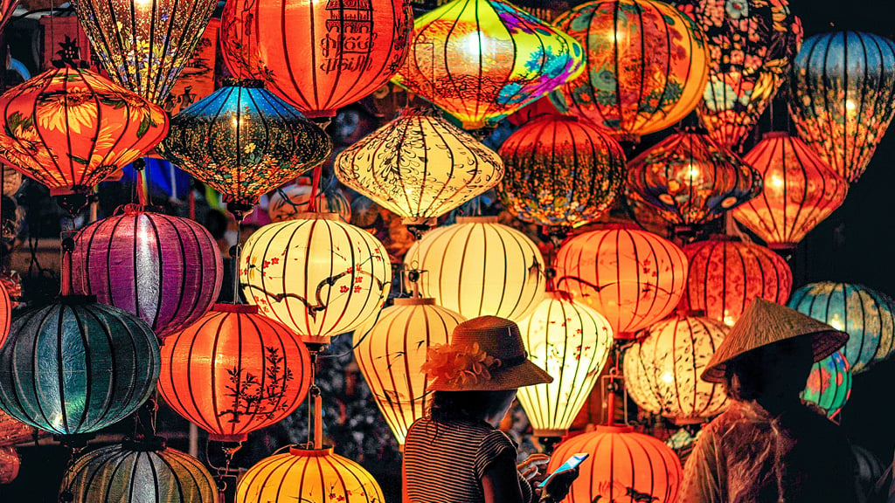
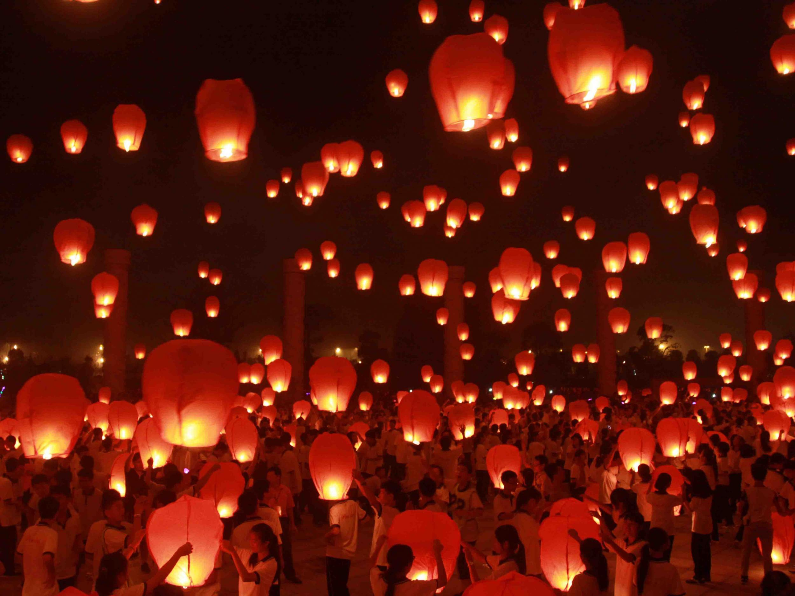
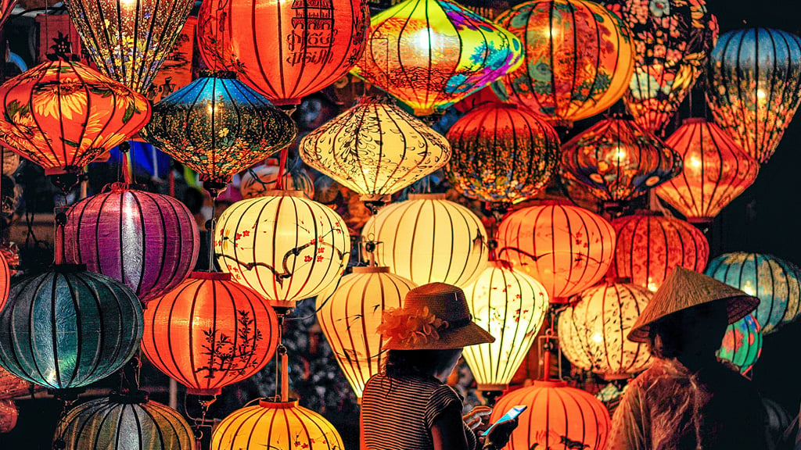
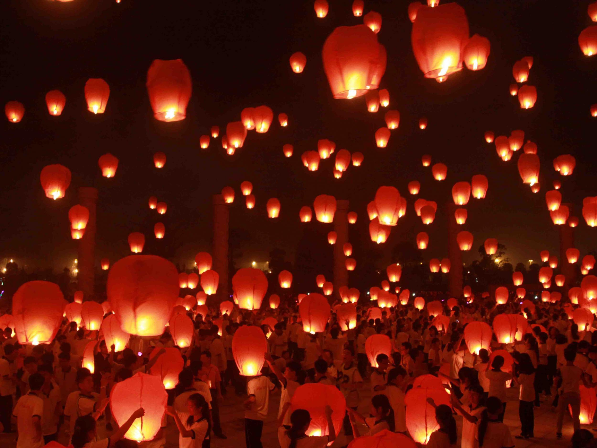

Quiet Night Thought
"Before the bed bright moonlight,
Could be frost upon the loam. The
head lifts up and sees the moon,
And sinks with thoughts of home."
Mid-Autumn Festival, Zhongqiu Jie (中秋节) in Chinese, is also called the Mooncake Festival or the Moon Festival.
As the second most important festival in China after Chinese New Year, Mid-Autumn is an official public holiday. In 2023, the festival falls on September 29th, which is close to China’s National Day on October 1st. Therefore, people living in Mainland China will enjoy an 8-day public holiday (from September 29th to October 6th).
In China, Mid-Autumn Festival is a reunion time for families, a little like Thanksgiving. Chinese people celebrate it by gathering for dinners, worshiping the moon, lighting paper lanterns, eating moon cakes, etc.
It is also celebrated by many other countries, such as America (mainly in the Asian American community), Singapore, and Malaysia. The date is the same as in China, but there is no public holiday.
Also known in many Asian countries as the Moon Festival or Lantern Festival, the Mid-Autumn Festival welcomes the autumn harvest and full moon. Asia Mid-Autumn Festival features Taiwanese artists and photography, storytelling, and exciting art activities such as lantern-making, paper cutting, and faux mooncakes.